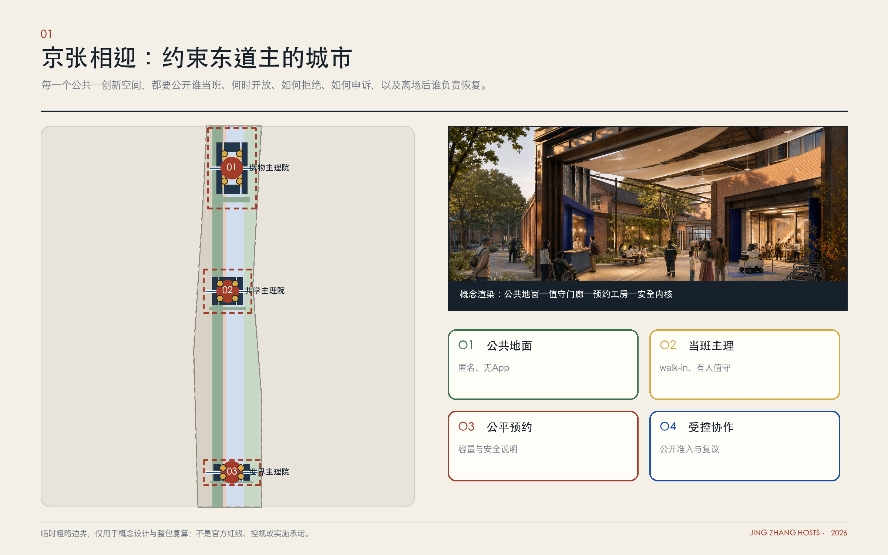
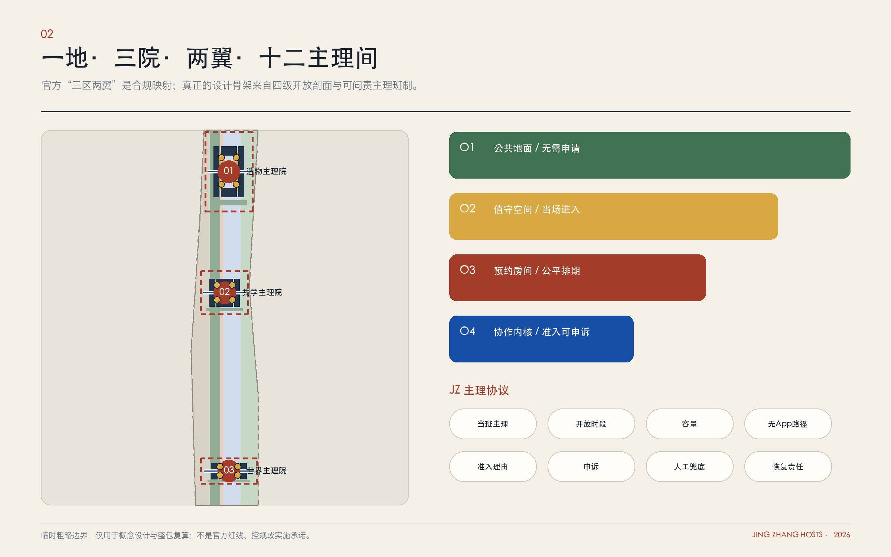
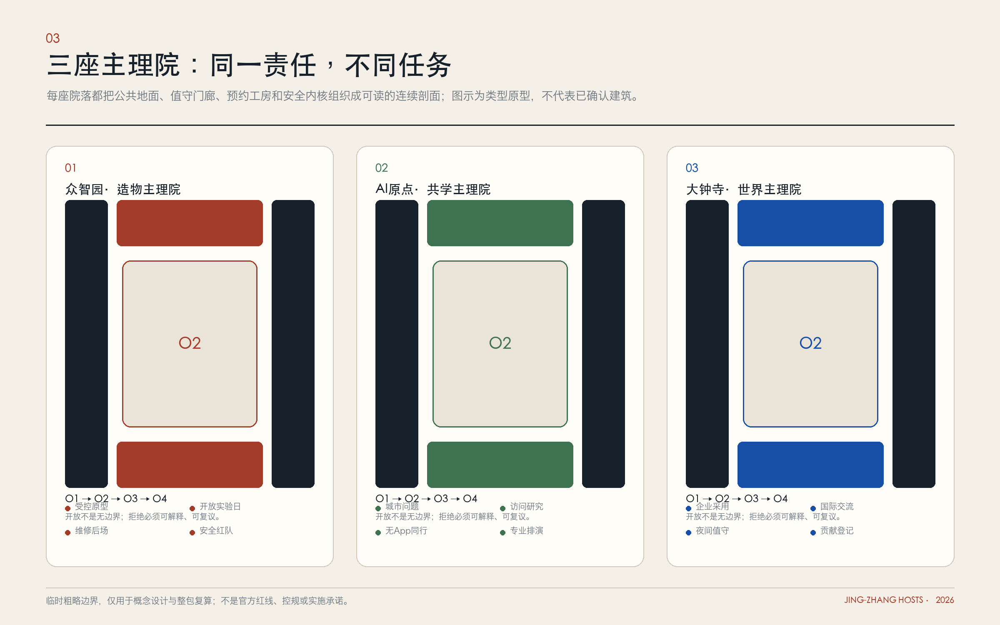
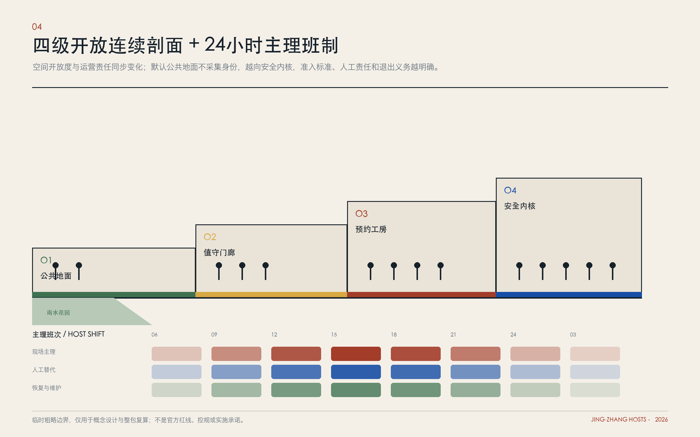
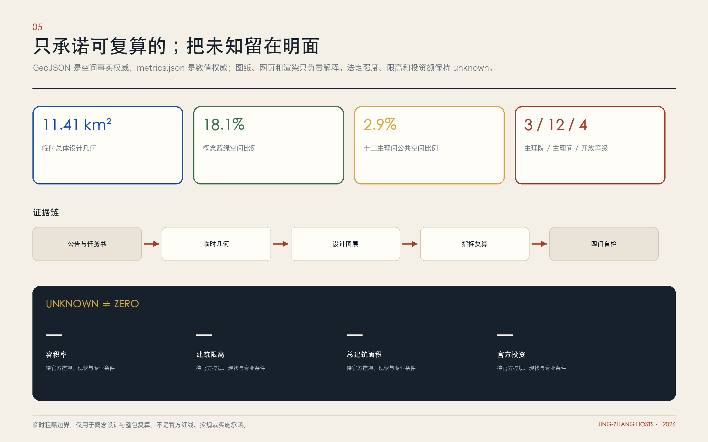

京张相迎｜JING-ZHANG HOSTS：一座约束东道主的 AI 城市
城市接待不是导览服务，而是每个公共—创新空间对陌生人的开放、解释、引介、冲突调解与事后恢复所承担的可核验责任。方案以一片共同地面、三座主理院、两翼服务接口、十二主理间和四级开放梯度，把责任写进空间与运营。
京张相迎｜JING-ZHANG HOSTS：一座约束东道主的 AI 城市
一句话提案：AI 时代城市的稀缺资源，不只是算力，而是愿意负责的东道主。京张相迎不是为访客再造一套导览，而是要求每个公共—创新空间公开：谁当班、何时开放、怎样准入、为何拒绝、如何申诉，以及离场后谁负责恢复。
设计依据与资料清单
本方案首先服从征集文件所确立的三层工作范围与成果深度：约 43.6 平方公里统筹研究范围、约 11.4 平方公里总体设计范围，以及总计约 368.4 公顷的三个重点区域。重点区域的任务口径分别为众智园约 192.1 公顷、AI 原点社区约 104.3 公顷、大钟寺约 72.0 公顷；面积用于组织研究与叙事，不替代法定边界、权属或控规结论。来源 来源 方案采用“事实—推导—提案”三级表达：官方公告、任务书和资料包明确给出的内容标记为事实；从现有数据计算所得的面积、比例和连通关系标记为推导；尚待测绘、权属、管线、交通和法定规划核验的空间设想，统一标记为提案或候选界面。深度
资料底板包括征集公告、智能体任务书、场地资料包、来源登记表、边界与重点区域数据、现状处理数据、规划限制说明、几何文件与指标文件。当前官方重点区域精确多边形、地块权属、完整现状建筑属性、轨道及公交客流、地下管线、污染与结构安全、法定容积率和高度等控制条件并未全部进入可核验数据包，因此本稿不做“某地块必须拆除”“某道路必然新增”“某建筑必定保留”等未经证实的判断。来源 来源 方案图中的边界、重点区域和建筑轮廓只承担概念定位与复算索引，后续应以主管部门提供的正式坐标、审批文件和现场调查替换。空间数据
研究选取七个经项目方或城市官方资料核验的案例：墨尔本 City Ambassadors、International House Helsinki、赫尔辛基 Oodi 中央图书馆、巴塞罗那 Ateneus de Fabricació、伦敦 Here East、首尔 Oil Tank Culture Park，以及新加坡 one-north。它们分别回答“真人值守怎样分布”“跨部门服务怎样同址”“公共—预约—安静空间怎样分层”“创新设施怎样回馈社会”“工业遗存怎样形成开放与受控并置”“不同遗存怎样差异化介入”“研发、孵化和生活支持怎样形成连续生态”。案例只用于提问和校准，不把异地经验当作本地成功证明，也不复制其制度或建筑造型。来源 来源 来源
核心判断是：百年京张的独特机会不在复制某种园区形态，而在以铁路遗产的抵达叙事、中关村创新生态、高校科研资源和 AI 人才流动，共同构成一套“主理团队有名字、班次可查询、权限有边界、准入可申诉、离场能恢复”的城市制度。案例来源及其不可照搬的条件已登记在 sources.json；任何成效数据仍需回到项目方原始材料和本地基线核验。来源 来源 来源

三层范围工作框架
方案以“一地·三院·两翼·十二主理间”组织三个工作层级。约 43.6 平方公里统筹研究范围不是一张追求均质建设的总平面，而是一张“主理网络”：把高校、科研机构、企业、社区、公共部门、文化与生态资源视为可能承担不同责任的节点，研究人才、知识、资本、场景与公共问题如何相遇。约 11.4 平方公里总体设计范围被定义为“相迎公共地面”，依托可核验的铁路遗产与现有公共空间线索，形成连续但可分段实施的抵达、问询、展示、工作、休息和离场系统。三个重点区域则分别成为能够真实承接项目的主理院，细化到入口、首层、共享空间、后勤、安全分区和运营班次。深度 空间数据
“一地”是 Common Ground，不是又一条以铁路比作代码的线性景观；它把遗址公园及其横向城市接口视为人人可进入、默认匿名且无需应用程序的共同地面，再由有工作人员、有班次、有无障碍路线和人工兜底的门厅、廊下、前台、安静室与测试界面逐级加深。“三院”对应众智园、AI 原点社区和大钟寺，承担造物与治理、共学与人才生活、城市采用与国际交流三类互补职责。“两翼”不是新增行政边界，而是资源与场景的协作方向：中关村科技服务翼承接知识产权、法务、资本、标准、国际合作等资源对接；小月河场景翼承接居民生活、公共服务和真实环境反馈。两翼的节点与线路须在下一阶段结合正式边界、现状道路和机构意愿校核，当前只表达接口关系。来源
整个系统设置四级开放梯度。O1“开放门廊”无需下载应用、无需预约，可获得方向、纸质说明、饮水、短暂停留和人工帮助；O2“共享客厅”在有人值守和限定时段内用于展示、讨论与低风险体验；O3“预约工作间”服务研究、辅导、共创和可控测试；O4“安全核心”仅对授权人员开放，承载实验设备、敏感数据或运维后台。每一个空间单元都配置门牌、负责人、开放时段、适用对象、数据说明、紧急联系人和退出路径，形成可读的“主理人门牌”。这一梯度既保障开放，也承认科研安全、隐私和城市运行的边界。标准

统筹研究范围产业与未来城市研究
统筹层的产业判断不是再造一条只以企业数量和楼宇面积衡量的“AI 产业带”，而是补齐 AI 从知识产生到城市采用之间最稀缺的责任链。中关村和周边高校能够提供研究、工程与人才来源，企业能够提供产品化能力，社区和公共部门能够提出真实问题，但三者之间常缺少一个能解释规则、组织初次接触、安排有限试验并对结束负责的角色。JING-ZHANG HOSTS 将其概括为“主理经济”：科研机构主理知识开放，企业主理产品安全，公共部门主理公共价值，社区主理日常经验，专业服务机构主理合规与转化。它不是新增一层审批，而是为既有主体建立可被找到、可被评价的协作接口。来源 深度
七个全球案例提供七类可转译机制。墨尔本用固定服务点与流动真人大使形成分布式接待，提示“可找到的人”需要点位、班次和服务数据，但旅游导览不能代替公共服务；International House Helsinki 将移居、就业、家庭与雇主服务协同到实体界面，提示跨部门转介需要清楚权限，却不能照搬芬兰资格制度。来源 来源 Oodi 通过公共活动、预约制作与安静停留的空间分层以及工作人员辅助，证明开放并不等于无人管理；巴塞罗那公共制造网络用技术人员、初访沟通、制作支持和社会回馈约束免费创新设施，提示公共价值必须进入运营协议。来源 来源
Here East 把奥运媒体中心转化为教育、企业、创意与公共活动并置的创新社区，提供“公共地面—共享创新—安全内核”的再利用参照，同时提醒私营园区的开放不能自动等同公共权利；首尔 Oil Tank Culture Park 对六座工业遗存采用保留、轻介入、展演和信息交流等不同策略，提示遗产更新应由结构、价值和运营共同决定；one-north 则说明研发、孵化、投资与生活支持需要在区域尺度形成连续生态，而不是靠一个大厅完成。来源 来源 来源 上述制度和市场条件与海淀不同，本方案只提炼“主理班制、开放梯度、适应性再利用、共享服务、公共回报”五项方法，不复制建筑形式或治理承诺。标准
未来城市部分提出“城市作为有条件的东道主，而非无边界的实验场”。任何进入真实城市环境的 AI 原型，都必须回答九个问题：谁是主理人、为谁服务、在哪里发生、持续多久、使用什么数据、谁能中止、由谁人工兜底、产生何种公共回报、结束后如何撤场或修复。由此形成 JZ Host Protocol（京张主理协议），使“欢迎创新”与“保护公众”成为同一件事。它也把国际人才服务从一次性接待升级为持续可见的城市能力：来访者能找到人、理解规则、进入合适的协作网络，并在离开时撤回授权、归还设备、归档成果。深度
统筹层最终输出三张动态清单：其一是主理节点地图，记录愿意承担公开职责的机构与空间；其二是问题与能力清单，用非敏感、可更新的方式匹配城市问题和技术能力；其三是公共回报账本，记录开放时数、服务对象、验证结论、停止原因和后续责任。清单不收集个人轨迹，不以人脸或设备标识形成隐性画像；跨机构共享只采用必要、授权、可撤回的数据。由此，43.6 平方公里成为一套可协作的城市关系，而不是一张把所有地区同质化的开发蓝图。来源
总体设计范围城市更新与控规深度城市设计
总体设计将 11.4 平方公里组织为连续而可分段的“相迎公共地面”，通过既有城市界面的修补、首层开放、慢行衔接、标识照明和运营点位，把分散资源变成可被普通人理解的抵达系统。空间结构不是一条从起点到终点的观光轴，而是“抵达—定位—会面—试作—反馈—离场”的循环。各段优先识别可逆、低干预的候选动作：清理被遮蔽的入口、增加有遮雨的开放门廊、在授权公共建筑首层设置人工前台、补全跨路口无障碍连续性、将闲置时段转化为预约工作间。任何涉及道路红线、历史建筑、结构改造、消防或轨道安全的动作，均须在正式资料和专项审查后确定。深度 空间数据
用地与功能采取“前台—共创—后场”三层剖面。面向街道的前台承载无门槛问询、可读展示、社区服务和人机协同说明；中部共创层承载会议、教学、联合办公、原型讨论和小规模可控体验；后场承载实验、设备、仓储、垃圾转运、机电与数据基础设施。三层通过 O1—O4 开放梯度连接，既防止创新活动退缩到封闭园区，也避免把科研核心强行暴露给公众。拟议 AI 研发、公共绿地、产业服务和社区服务等功能仅为概念性结构，需要以法定用地分类、现状权属和公共服务评估复核。空间数据 标准
形态策略采用“小门厅、长门廊、厚首层、安静内院”，不以标志性高层争夺天际线。沿街新增体量优先形成可进入的首层和连续遮蔽；改造建筑优先处理门槛、楼梯、电梯、卫生间、声环境和导视；科研设备区采用可检查的安全边界。高度、容积率、建筑密度、绿地率和退界在当前数据条件下不设虚构数值，后续按正式控规逐地块校准。深度 深度 视觉语言以两个相向括号构成字母 H，中间的负形既像门也像接口；锈红来自铁路材料的时间感，暖纸白用于人本信息，钴蓝标记数字服务，黑色用于规则与警示。所有 AI 生成透视图均应呈现为“概念场景”，不伪装成建成照片或审批承诺。
总体设计的最小实施单元不是地块，而是“主理间”：一个有名字的空间、一名或一组可联系的责任人、一份开放日历、一套安全与数据规则，以及一条可见的离场路线。十二个主理间可分布于三院与公共地面，通过统一门牌和服务协议被识别，但建筑形式允许各自回应所在环境。这样，城市更新可以从真实可运营的小单元开始，再根据使用证据决定永久建设，而不是先完成大规模形态、再寻找内容填充。标准
重点区域详细设计
三个重点区域不是三套彼此竞争的科技园，而是同一主理系统中的三种院落。众智园：全栈造物与治理主理院 / Prototype Host Yard，承接从算法、算力、硬件到场景测试的完整协作，重点布置受控原型院、开放实验日门厅、设备交接间、安全观察廊和 AI 治理讨论室。公众可以在 O1、O2 区理解“机器正在做什么、谁能停止它”，专业团队在 O3、O4 区完成调试与评估。具体机器人路线、载荷、消防和噪声边界在专项工程前不预设。来源 空间数据
AI 原点社区：共学与人才生活主理院 / Collegiate Host House，把人才服务嵌入日常生活而非集中成单一办事大厅。候选空间包括国际人才抵达台、访问研究者驻留工作室、跨校共学室、家庭与照护转介台、安静夜间主理间和无应用服务窗。它服务的不只是“高端人才”，也让家属、青年开发者、社区居民和低数字能力使用者获得清晰入口。涉及住房供应、学位、医疗、签证等事项时只提供经授权的咨询和转介，不作超出机构权限的承诺。空间数据 深度
大钟寺：城市采用与国际交流主理院 / World Exchange House，承担企业、城市使用者和国际来访者之间的翻译工作。候选功能包括多语种抵达厅、市场采用廊、城市问题受理台、文化内容试演室、企业服务主理间和成果发布界面。这里的“采用”不是大型发布会后的流量，而是把一个 AI 服务拆成适用人群、风险、人工兜底、成本、反馈和退出条件，让中小企业、社区服务者和采购方能做出知情选择。具体商业业态和租赁方案须在市场与权属调查后形成。空间数据
三院各设置一个“荣誉节点”，但荣誉不等于个人崇拜。其一，百年抵达厅 / Century Arrival Hall，以经过史料核验的京张铁路人物、工程、城市变迁和当代抵达故事建立时间序列，所有口述史标明讲述者授权和不确定性；其二，主理人名录 / Registry of Hosts，记录愿意公开承担责任的机构、团队与维护者，同时显示职责期限和状态，不制作永久不可撤回的个人排名；其三，世界来宾簿 / Global Guestbook，记录合作主题、公共成果和后续联系，不记录个人轨迹、住址或未经同意的身份信息。三处最终落位均为候选，须结合历史价值评估、公共产权和运营可达性确定。来源

详细设计统一采用“门槛剖面”表达：街道侧首先是无应用、无预约的 O1 门廊；进入后是有人值守的 O2 共享客厅；再后是需要明确同意和预约的 O3 工作间；最内侧是 O4 安全核心。每一处均给出白天与夜间、工作日与活动日两套运行状态，并为设备运输、垃圾、消防、工作人员休息和应急撤离安排独立路径。建筑师、运营者、无障碍顾问、消防与数据治理人员应共同签署开业前检查表，避免“开放空间”在图纸上开放、在日常中失效。标准
AI 创新生态、人才画像与 AI+ 场景
JING-ZHANG HOSTS 不把“人才”处理为单一精英标签，而以六类任务画像校准空间和服务。访问型 AI 研究者需要在短时间内理解规则、找到合作者并处理家属与生活事务；青年创业者、开源开发者与一人公司需要低成本会面、可信测试和知识产权转介；本地居民与家庭关心技术是否真正改善生活、出了问题找谁；中小企业主与一线操作员需要可计算的采用成本、培训和人工替代流程；老人、残障人士和低数字能力使用者需要不依赖手机、语音或人脸识别的服务入口；首次到访者与国际来宾需要多语种、可理解、不过度承诺的导航。画像用于设计任务，不建立个人标签库；评价以匿名汇总、主动选择参与和最小必要数据为原则。来源
十二张场景卡构成从抵达到退出的完整链条，每张卡均包含主理人、地点、开放层级、持续时间、数据边界、人工兜底、停止条件和公共回报：
1. 国际人才相迎台 / International Talent Welcome Desk：由经培训的城市服务主理人提供多语种方向、机构介绍和事项转介；不承诺签证、住房、教育或医疗结果。 2. 抵达 72 小时服务包 / First 72 Hours Kit：将交通、临时工作、健康、家庭、无障碍与紧急联系整理为纸电双版清单，所有链接标注来源与更新日期。 3. 访问研究者驻留工作室 / Visiting Researcher Residency：以限期驻留连接高校、企业与社区议题；在入驻时约定成果开放程度、设备使用和离场归档。 4. 开放实验室主理日 / Open Lab Host Day：科研团队在安全边界外解释实验目标、失败与风险，公众可提问但不得进入未授权核心。 5. 城市问题受理台 / City Problem Reception：居民、机构和一线工作者提交问题，由主理人先判断是否适合 AI、是否存在更简单的非 AI 解法，并公开受理状态。 6. 受控原型院 / Hosted Prototype Yard〔产业验证一〕：具身机器人、边缘设备或城市感知原型在封闭时段、限定路线和人工接管下测试，记录异常、停止原因与撤场恢复。深度 7. 公共服务排演室 / Hosted Public-Service Rehearsal〔产业验证二〕：教育、健康、法律或政务辅助系统只在模拟或授权场景中排演，AI 不作最终判断；由专业人员复核输出并保留人工通道。 8. 市场采用厅 / Hosted Market Adoption Hall〔产业验证三〕：智慧零售、企业服务和文化内容以限定用户、限定周期的小规模试用验证成本、培训、投诉与退出，不以展示点击量代替真实采用。 9. 多语种无应用陪伴 / Multilingual No-App Companion：现场人员、纸质地图和可选的翻译设备共同服务，不强迫扫码、注册、提供手机号或人脸。 10. 夜间主理间 / Night Host Room：在经安全评估的点位提供安静等候、电话协助、基础充电和转介，避免把“夜间活力”误解为持续噪声与消费。 11. 铁路遗产主理漫步 / Heritage Host Walk：以经核验史料和自愿授权口述史串联遗产节点，允许明确标注“尚待考证”，不生成虚构历史人物或事件。 12. 离场与授权撤回站 / Check-out & Withdrawal：帮助参与者撤回数据授权、归还设备、关闭账号、说明成果归属，并检查临时设施是否恢复原状。
三项产业验证使用同一套“有限试验—独立观察—公开结论—可逆退出”流程。验证一检验具身智能在真实但受控环境中的安全、人工接管与运维成本；验证二检验公共服务 AI 的解释、专业复核、偏差与无数字替代；验证三检验企业与文化类 AI 产品的培训负担、投诉机制、商业可持续性和退出成本。成功不等于继续扩大，失败也不是必须隐藏的负面结果；如果不能建立清楚的责任主体、数据边界和人工兜底，就不进入真实场景。深度
创新生态由“主理人议会”协调，建议由属地治理、科研与高校、企业、社区、无障碍、法律伦理和运维代表组成；其组织形态、权责和经费须经主管部门与参与机构确认。议会每年组织主理周、开放实验季、城市问题征集、国际驻留周期和失败／离场复盘，发布公共回报账本。AI 不是这套系统的主人，而是被主理的工具；任何自动化服务都必须把负责的人、可以停止它的人和非数字替代方案展示在同一界面。标准
用地、建筑规模与拆改留方案
本方案坚持“先盘活、后增量；先可逆、后永久；先验证运营、后确定规模”。当前临时总体设计几何复算面积约为 11,412,825.386 平方米，本方案绘制的概念建筑基底投影面积约为 827,699.635 平方米；这些数值只检验提交包内部一致性，不是权属面积、现状建筑底数、总建筑面积或规划审批指标。指标 指标 建筑总量、地上地下规模、容积率、建筑高度、密度、退界和停车配建仍需正式控规、测绘、产权、结构、消防和交通资料支持，因此不在本阶段给出伪精确配额。深度
拆改留采用“四步判定”。第一步核验历史、文化、工业与社会价值，未经评估不拆；第二步核验结构安全、消防、无障碍和机电条件，不能仅凭外观决定保留；第三步核验使用和权属，明确谁能开放、开放多久、维护经费从何而来；第四步比较“轻改造—局部增建—整体替换”的全生命周期碳、成本和运营效果。优先保留可承载主理间的首层、院落、门厅、连廊与大跨空间；优先改造门槛、卫生间、电梯、声环境、遮雨和后勤；只有在专业鉴定证明无法安全适配，且程序、补偿与公共利益充分时，才讨论拆除。深度
新增建筑采用可分期的“主理构件库”：约一间房尺度的问询亭、可移动展示与翻译单元、可拆门廊、预约工作间、安静室、设备交接间和具备独立后勤的测试盒。构件不预设统一面积，先由场景、人数、消防和无障碍流线反推；永久建筑则必须在 100 天运营试点提供使用证据后进入设计。概念用地中的 AI 研发、产业与商业服务、社区服务和公园开放空间只表达功能关系，不构成法定调整建议。空间数据 空间数据
交通、轨道、市政与公共服务设施
交通策略以“可抵达、可理解、可退出”为优先。公共地面首先校核步行和轮椅连续性：路口等待、坡道、盲道、遮雨、夜间照明、座椅、卫生间和跨越铁路或快速交通设施的安全方式；再识别与轨道站点、公交站、共享单车、出租车落客和园区接驳的接口。当前资料不足以支持新增道路、站点或确定客流的结论，因此图示道路仅作为概念连接，必须以专项交通调查和主管部门数据复核。深度 空间数据
每个主理院设置“最后五百米说明”：从最近的公共交通下车点到 O1 门廊，提供连续导视、纸质地图、夜间可见标识和无障碍替代路线；大型活动采用预约分时、公共交通优先和临时交通管理，不以增加小汽车泊位作为默认解法。物流、实验设备、垃圾清运、网约车和访客步行尽量分时分线；具身设备不得在未授权公共道路上试验。铁路设施及其保护范围内的任何建设、穿越和照明，均须服从铁路安全、文物或相关专业管理要求，方案不以视觉叙事覆盖工程边界。标准
市政与新型基础设施采用“可见责任”的双层系统。物理层包括电力、给排水、再生水、通信、消防、环卫、充电、设备存储和应急电源；数字层包括预约、门禁、翻译、设备状态和公开运营看板。数字层失效时，O1 前台、纸质流程、人工热线和机械开启方式仍应可用。涉及传感器时公开其用途、采集范围、保存期限和负责人，默认不做人脸识别和持续个体追踪；不同验证项目的数据不自动汇并。深度
公共服务以转介而非替代为原则。健康、教育、法律、政务和就业服务的 AI 工具只能协助解释、整理与预约，专业判断仍由具备资质的人员完成。主理间配备家庭友好设施、安静空间、无性别与无障碍卫生间的候选配置，并根据现场条件与规范落实。服务成效以“找到负责人的时间、问题是否闭环、是否保留无数字通道”衡量，而不是以扫码数和屏幕数量衡量。来源

蓝绿空间、公共空间与城市风貌
蓝绿系统既是生态网络，也是相迎系统最平等的公共前厅。当前概念几何复算得到绿地比例约 18.11%、公共空间比例约 2.91%，仅代表本方案在临时边界中绘制对象的内部比例，不是法定绿地率、现状真实比例或建设目标。指标 指标 下一阶段需结合正式地形、水系、树木、海绵设施、生态敏感性和产权资料，复核哪些空间能够连续开放、哪些区域需要季节性或安全性限制。深度
公共空间采用“门廊—口袋庭院—主理廊—安静绿岛”的层次。门廊承担问询、遮雨和等候；口袋庭院承载短时会面和低风险展示；主理廊连接三院并提供可读的开放时刻；安静绿岛为居民、儿童、老人、鸟类和夜间休息保留不被活动占满的空间。活动密度不追求全时热闹，夜间降低声光干扰，避免大屏、无人机和强互动装置成为默认景观。临时装置必须说明维护方、用电、防风、撤除日期和地面恢复责任。空间数据
城市风貌不把“未来感”等同于镜面幕墙、蓝色灯带和赛博朋克图像。锈红对应铁路材料和时间沉积，暖纸白对应可阅读的信息与人的肤色，钴蓝只标记数字接口，黑色标示规则、安全和不可进入区域。H 形相向括号可转化为门牌、路面接口、廊架节点和导视框架；状态标签统一为“开放、预约、受控、暂停、已退出”，让城市的责任状态像交通信号一样清楚。历史叙事必须基于来源，新增构筑物与遗产保持可识别的新旧关系，不做仿古复制。标准
三处荣誉节点通过公共空间形成一条“抵达—承担—贡献”的叙事：百年抵达厅讲述城市如何迎来知识与人，主理人名录说明今天由谁承担责任，世界来宾簿记录合作留下的公共成果。它们不依赖巨型雕塑，而依赖可信的内容维护、定期更新和可撤回授权。候选公共空间轮廓须待官方边界和现场调查核验，当前图示不构成占地或产权判断。空间数据 空间数据
更新项目清单、实施政策与分期计划
项目库按“协议先行、轻改造验证、永久建设择优”组织。首批非工程项目包括：建立主理节点与联系人台账、发布 JZ Host Protocol、培训多语种与无障碍主理人、完成铁路史料核验、建立公开运营日历和投诉／退出流程。首批轻改造项目包括三处候选 O1 人工前台、无应用导视、可逆门廊、安静室、纸电双版 72 小时服务包和三项受控产业验证。中长期项目才包括公共地面断点修补、三院永久门厅、跨机构共享设施及经论证的新建体量。深度
实施分为一个前置阶段与四个递进阶段。第 0 期：证据与授权，完成边界、权属、建筑、交通、市政、生态、历史和机构意愿的核验，形成不能做、暂缓做、可以试的三类清单。第 1 期：100 天主理试点，在获得授权的既有公共界面布置三个有人值守的前台，同时启动受控原型院、公共服务排演和市场采用厅三项验证；100 天是运营观察周期，不是越过审批的建设期限。第 2 期：可逆空间网络，依据试点数据改善门槛、无障碍、照明、标识、共享工作间和两翼连接。第 3 期：永久主理院与公共地面，在正式控规、工程、遗产和环境评估后建设经证明必要的永久空间。第 4 期：持续运营与年度复盘，通过主理周、驻留计划、公开账本和退出审计不断修正。其中第 1—3 期对应空间数据中的三个实施面，第 0 与第 4 期分别是前置核验和持续运营，不另造建设边界。深度 空间数据
运营由“主理人议会—三院运营团队—场景项目主理人”三级承担。议会审议公共价值、伦理、安全和年度资源；三院团队负责开放时段、设施维护、人员培训和跨区协作；项目主理人对单次试验的对象、数据、人工兜底和恢复负责。每个项目使用统一九字段登记：主理主体、服务对象、实体地址、持续时间、同意与数据、安全边界、人工兜底、公共回报、停止及退出条件。出现责任主体离场、数据用途变化、安全能力不足、投诉无法处理等情形时自动暂停，不以活动曝光度抵消风险。来源
资金结构建议分为基础公共服务经费、机构会员与共建经费、场景验证合同、公益及研究基金四类，原则是公共 O1 入口不以付费和注册为门槛，企业赞助不得换取隐性数据或排他性城市空间。政策工具包括授权既有空间分时开放、试点沙盒的责任与保险条款、公共数据最小化、临时设施可逆审批、无障碍与人工兜底检查、失败结果公开和恢复保证金。具体组织、采购、保险和经费安排需要依法由主管部门与各主体确定，本方案不虚构已存在的治理机构或资金承诺。标准
指标体系、面积复算与合规矩阵
指标体系从“建了多少”转向“责任是否可达”。一级指标包括：主理可达、公共开放、人才融入、产业验证、无障碍与公平、数据与安全、空间生态、退出恢复。建议核心指标为：到达负责人的中位时间；拥有明确人工兜底的 AI 服务比例；首次来访者完成基本定位的比例；问题从受理到明确下一步的比例；高校—企业—社区跨界项目的后续履约率；居民与中小企业参与比例；无应用流程完成率；无障碍实地任务完成率；试验按期停止／归还／恢复的完成率；公开失败与整改记录比例。所有目标值在基线调查后设定，不以未经观测的漂亮数字作为承诺。深度
面积复算采用“几何可追溯、口径可解释、缺失可见”的原则。当前概念边界面积为约 11,412,825.386 平方米，建筑轮廓投影约 827,699.635 平方米，绿地与公共空间比例分别约 18.11% 和 2.91%，重点区域数量为 3；容积率目前为 unknown，因为缺少可信楼层和建筑面积数据。指标 指标 指标 任何几何更新后均需重新运行面积统计和重叠检查，确认重点区、用地、建筑、道路、绿地、公共空间与分期对象仍有唯一 ID，正文中的数值与生成指标一致。未知项必须保留 unknown，不以估算伪装成实测。
合规矩阵覆盖六类关系：来源与事实是否对应，工作深度是否覆盖任务书，用地分类是否与现行指南对接，城市设计内容是否达到相应表达深度，工程和建筑信息是否越过阶段边界，隐私版权与 AI 生成是否可说明。每项结论标记“已证实、可推导、待核验、提案”四种状态，并指定下一步责任人。对法定规划、交通组织、市政容量、结构消防、遗产保护、生态环境、数据治理和公共采购等专业事项，本方案只提出需核验的问题和设计接口，不代替专项审查。标准 标准
评价同时采用定量与定性证据。定量数据来自匿名运营记录、现场计数、任务测试和几何复算；定性证据来自经同意的访谈、观察笔记、投诉与复盘。禁止用个人轨迹、情绪识别或黑箱“人才分”优化服务。每季度发布简版公共回报账本，每年由含社区与无障碍代表的外部小组抽查场景卡、停止记录和恢复情况。指标的目的不是给城区做单一排名，而是帮助判断哪个主理间值得扩大、哪个需要修正、哪个应当退出。来源

风险、版权与合规说明
主要风险分为八类。资料风险：正式边界、权属、控规、建筑、市政、客流和生态数据不完整，可能导致落位或规模变化；应保留候选表达并设置资料闸门。概念风险：“主理人”可能退化为形象大使或活动志愿者；应以可联系、可暂停、可追责和可退出的协议约束。社会风险：国际人才服务可能挤压本地居民权益；O1 公共入口、社区席位和公平指标必须同时存在。技术风险：AI 错误、偏差、失控与供应商锁定；采用人工最终判断、最小数据、可替换接口和停止条件。空间风险：所谓开放导致噪声、拥挤和生态压力；实行分时、容量、安静区和恢复审计。深度
其余三类为：运营风险，新空间建成后缺少稳定人员和维护经费，故先做 100 天值守验证、再决定永久建设；治理风险，跨机构议会权责不清或被强势主体主导，故公开成员、利益冲突、决策记录与申诉机制；叙事与版权风险，铁路历史、人物形象、地图、字体、照片和案例材料可能被误用，故逐项记录作者、来源、许可、改编方式和发布日期。荣誉节点中的个人信息均需明示同意和撤回渠道；世界来宾簿记录合作成果而非个人行踪。来源
AI 生成方法采用“机器扩展选项、人类承担判断”的六步流程。第一步由智能体读取公告、任务书、资料包、来源登记和几何对象，建立事实／缺失清单；第二步生成多个母题并进行重名与相似度筛查，最终选择以责任和相迎为核心的 HOSTS，而非铁路即代码、操作系统或共食长桌等高重复隐喻；第三步由规则脚本生成或校验边界、重点区域、功能、道路、绿地、公共空间和分期几何；第四步把每项主张绑定来源、标准、深度、数据或指标标记；第五步由城市设计、运营、交通、无障碍、数据治理和在地参与者人工审阅；第六步才使用图像模型制作概念场景，并在图注中标明 AI 生成、提示词版本、人工编辑和非建成事实。来源
生成过程不向模型输入真实个人身份、联系方式、住址、未公开商业秘密或敏感公共数据。文本与图像必须经过事实核验、版权检查、空间一致性检查和歧视性内容审查；案例图像优先采用自绘、授权或公共许可材料。模型、工具、版本、生成日期与人工修改范围应在最终提交包中公开，任何 AI 建议都不替代注册专业人员、主管部门或公众程序的结论。若模型生成不存在的历史、地名、机构合作或工程条件，应删除而非用“概念”掩饰。标准
本方案与常见“智慧城市展厅”的差异在于：屏幕不是主角，责任关系才是；与酒店式接待的差异在于：相迎不是消费服务，而是跨科研、产业和公共生活的长期制度；与长桌或共食叙事的差异在于：合作不依赖聚餐象征，而依赖可进入的门槛、可验证的协议和可撤回的授权。最终版权以提交者原创文本、可追溯生成记录和合法素材为基础，引用全球案例只做适度转述并链接原始机构来源。标准
参考资料
以下资料构成本阶段的来源框架；机器可读 ID、用途边界与原始链接已登记于 sources.json。外部案例只作机制比较，不作为场地事实或实施成效证据：
1. 百年京张·AI 创新带城市设计开源征集官方公告，用于范围、目标与成果要求。来源 2. 《Agent Open Call Taskbook》，用于三层范围、三重点区域、两翼定位、场景与验证要求。来源 3. 场地资料包、来源登记表与处理后事实包，用于边界、几何、指标和缺失项声明。来源 来源 4. 住房城乡建设部城市设计、控制性详细规划和建筑工程设计深度相关文件；自然资源部国土空间调查、规划、用途管制用地用海分类相关指南。最终应复核现行版本和适用条款。标准 标准 5. City of Melbourne, City Ambassadors 与 visitor contact statistics，用于研究固定服务点、流动真人值守与服务可测量；不把旅游消费导览等同于公共主理。来源 6. International House Helsinki，用于研究移居、就业、家庭与雇主服务的跨部门实体协同；不转移芬兰的移民或资格制度。来源 7. Oodi Helsinki Central Library，用于研究公共活动、预约制作、安静停留与工作人员辅助形成的空间梯度；不复制地标建筑形态。来源 8. Barcelona Ateneus de Fabricació，用于研究公共数字制造、技术人员主理、免费使用与社会回馈之间的责任流程。来源 9. Here East, London，用于研究大型工业与奥运遗存的适应性再利用，以及公共地面、活动空间、共享创新和安全实验的并置；不把私营园区开放等同公共权利。来源 10. Oil Tank Culture Park, Seoul，用于研究不同遗存的保留、轻介入、可变运营与公民参与；不复制油罐奇观或一次性节庆。来源 11. JTC one-north 与 LaunchPad，用于研究研发、孵化、投资、灵活空间与生活支持的区域协同；本地落位仍待机构意愿、产权和交通核验。来源
案例引用遵循“原始机构优先、机制转译、边界说明”原则：不把宣传语言改写为客观绩效，不从单个案例推导海淀的必然结果，不使用来源不明的图片证明设计。所有场地结论仍应回到京张本地数据、机构访谈、公众参与和专业审查中验证；所有数字应能追溯到来源或复算脚本，所有未知条件应明确保留为待核验。来源 深度